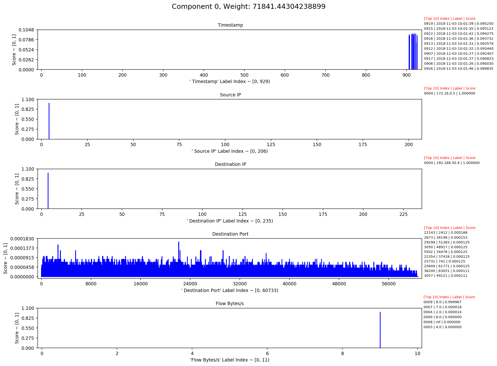

Interpreting Decompositions¶
Visualizations are the primary way of interpreting tensor decompositions. Here, we give a brief overview.
For a deeper look at this tool and the process of analyzing decompositions, see the Jupyter notebook Interpreting_Decompositions.ipynb located at: $ENSIGN_BASE/Ensign-Py3/demo/
Visualization¶
The ‘blue line plot’ is the primary way to interpret decompositions.
One of these plots of a single component is shown below:
This chart consists of a header and a four graphs.
The header gives the component identifier and its associated weight.
Each graph plots the ‘activations’ of a single mode. The y-axis shows the strength or ‘score’ and the x-axis contains the indices of all the labels in the mode. The information on the right of each graph displays the top-10 scoring labels in the mode.